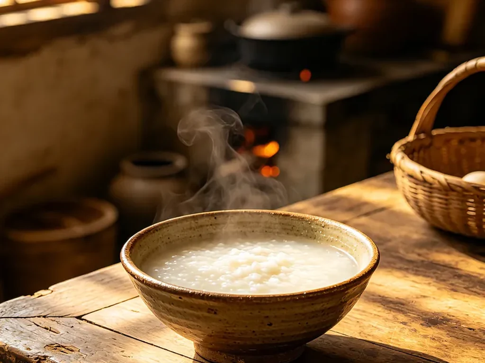

Plain Rice Congee and the Everyday Pot
At the grain stall, I asked why two sacks of white rice carried different prices. The seller rubbed a few grains between her fingers, then told me which one her family used for the breakfast pot.

A question at the grain stall
The seller did not answer with a long description. She opened one palm to show shorter grains and another to show longer ones, then pointed to the sack that softened the way her mother expected. I left with a plain paper bag and no printed instructions.
At home, the congee pot changes slowly enough to share the kitchen with other work. The lid sits slightly aside. A wooden spoon rests across the rim. When the rice loses its hard outline, the surface moves differently and the cook begins checking the bottom more often.
The bowl nearest the kitchen
Plain congee is rarely the whole table. Pickled vegetables, steamed bread, eggs, or yesterday's small dish may wait beside it. Yet the first bowl is often carried away nearly bare, especially when the diner wants breakfast without conversation.
Yam and millet make a yellower, thicker pot. Morning warm water reaches the table before grain, while mung-bean soup belongs to the summer afternoon. I notice the same ladle moving among these pots, wiped clean and returned to its hook.
What the pot does not announce
Congee gives little away from a photograph. The useful differences are in the rice, the vessel, and the point at which the cook decides the texture is right for the table in front of her.
I wash the starch line from the pot after breakfast. The spoon dries across the rack until the next morning.